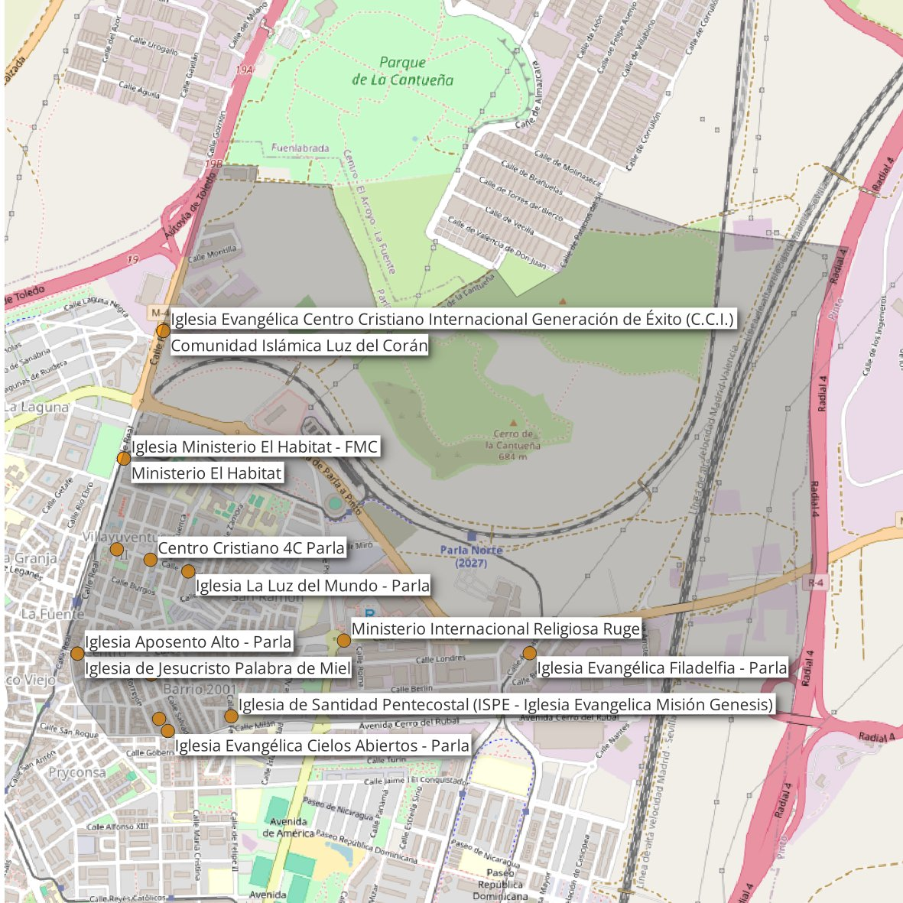
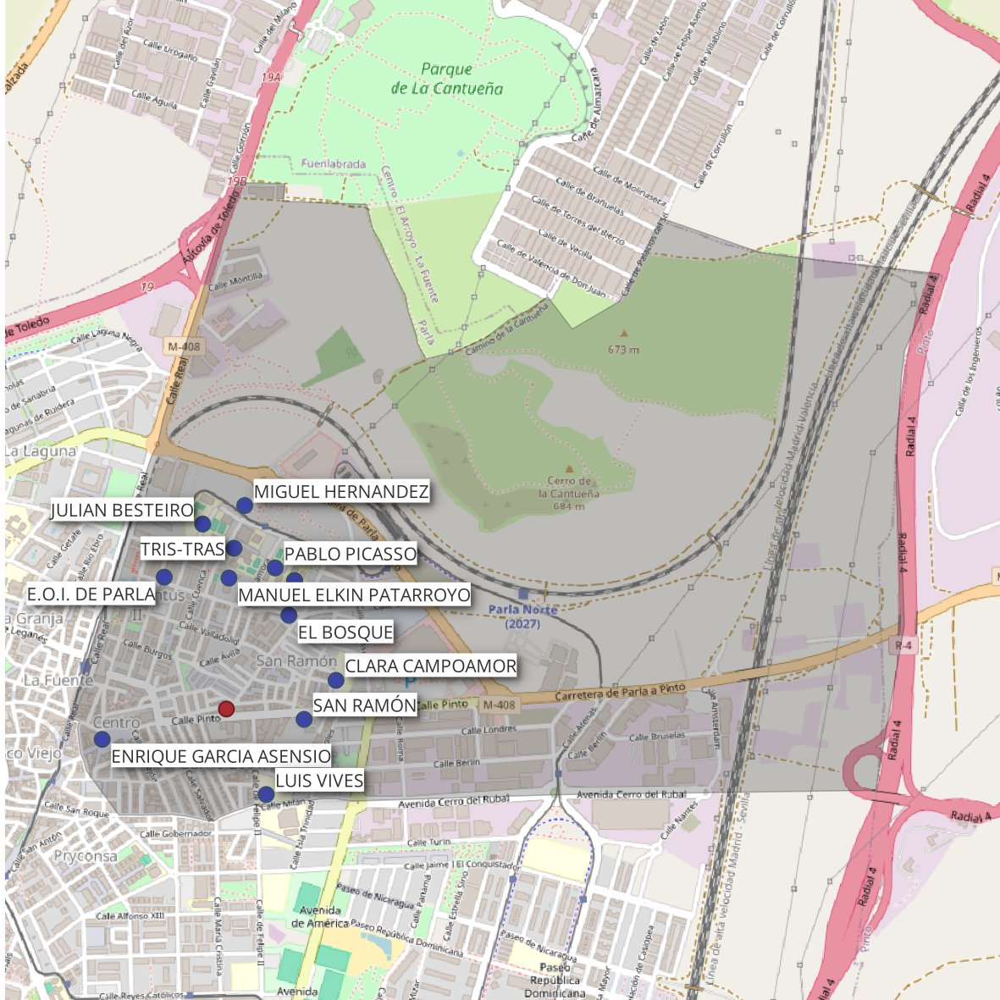

Puntos de interés en el territorio parroquial
Parroquia Nuestra Señora de la Paz (Parla) · Arciprestazgo de Parla
Entidades religiosas no católicas

15 entidades religiosas no católicas en el territorio de la parroquia.
Evangélicos (14)
- Centro Cristiano 4C ParlaCalle Ciudad Real 23, Parla
- Comunidad Cristiana Nueva Vida - ParlaCalle Macarena 21, Parla
- Iglesia Aposento Alto - ParlaCalle de Paloma 16, Parla
- Iglesia de Jesucristo Palabra de MielCalle de la Paloma 13, Parla
- Iglesia de Santidad Pentecostal (ISPE - Iglesia Evangelica Misión Genesis)Calle de Felipe II 26, Parla
- Iglesia Evangélica Centro Cristiano Internacional Generación de Éxito (C.C.I.)Calle Real 71 Esquina La Paloma, Parla
- Iglesia Evangélica Cielos Abiertos - ParlaCalle de la Macarena 31, Parla
- Iglesia Evangélica Filadelfia - ParlaCalle Atenas 8, Parla
- Iglesia Evangélica Pan de VidaCalle Dos Amigos 5, Parla
- Iglesia La Luz del Mundo - ParlaCalle Valladolid 1 Bajo 2, Parla
- Iglesia Ministerio El Habitat - FMCCalle Real 109 Local 6, Parla
- Iglesia Verbo de Dios ParlaCalle San Antón 1, Parla
- Ministerio El HabitatCalle Real 109, Parla
- Ministerio Internacional Religiosa RugeCalle Pinto (Cine Centro Comercial El Ferial ) s/n, Parla
Musulmanes (1)
- Comunidad Islámica Luz del CoránCalle Real 74 Bajo A, Parla
Fuente: Registro de Entidades Religiosas del Ministerio de la Presidencia, Justicia y Relaciones con las Cortes. Situación en el mapa: dirección geocodificada con CartoCiudad (IGN) o Nominatim (OpenStreetMap).
Centros educativos

13 centros educativos en el territorio de la parroquia (público: 13).
| Centro | Tipo | Titularidad | Domicilio | Web |
|---|---|---|---|---|
| CLARA CAMPOAMOR | Colegio de educación infantil y primaria | Público | Calle Luis Morales, 2, 28982 Parla | Página web |
| E.O.I. DE PARLA | Escuela oficial de idiomas | Público | Calle Guadalajara, 22, 28982 Parla | Página web |
| EL BOSQUE | Escuela infantil-casa de niños | Público | Calle Pintor Rosales, 1-B, 28982 Parla | Página web |
| ENRIQUE GARCIA ASENSIO | Escuela municipal de música | Público | Calle San Antón, 28982 Parla | Página web |
| EQUIPO ATENCION TEMPRANA PARLA | Equipo de orientación educativa y psicopedagógica. Atención temprana | Público | Calle Pintor Rosales, s/n, 28982 Parla | Página web |
| EQUIPO GENERAL PARLA | Equipo de orientación educativa y psicopedagógica. General. | Público | Calle Pintor Rosales, 1-B, 28982 Parla | Página web |
| JULIAN BESTEIRO | Colegio de educación infantil y primaria | Público | Calle Santander, 13, 28982 Parla | Página web |
| LUIS VIVES | Colegio de educación infantil y primaria | Público | Calle Felipe II, 9, 28982 Parla | Página web |
| MANUEL ELKIN PATARROYO | Instituto de educación secundaria | Público | Camino de la Cantueña, s/n, 28982 Parla | Página web |
| MIGUEL HERNANDEZ | Colegio de educación infantil y primaria | Público | Camino de la Cantueña, 3, 28982 Parla | Página web |
| PABLO PICASSO | Colegio de educación infantil y primaria | Público | Calle Pintor Rosales, 1, 28982 Parla | Página web |
| SAN RAMÓN | Unidad de formación e inserción laboral | Público | Calle Pinto, 76, 28982 Parla | Página web |
| TRIS-TRAS | Escuela infantil | Público | Camino de la Cantueña, s/n, 28982 Parla | Página web |
Fuente: registro de centros educativos de la Comunidad de Madrid. Solo se recogen los centros en situación de alta.